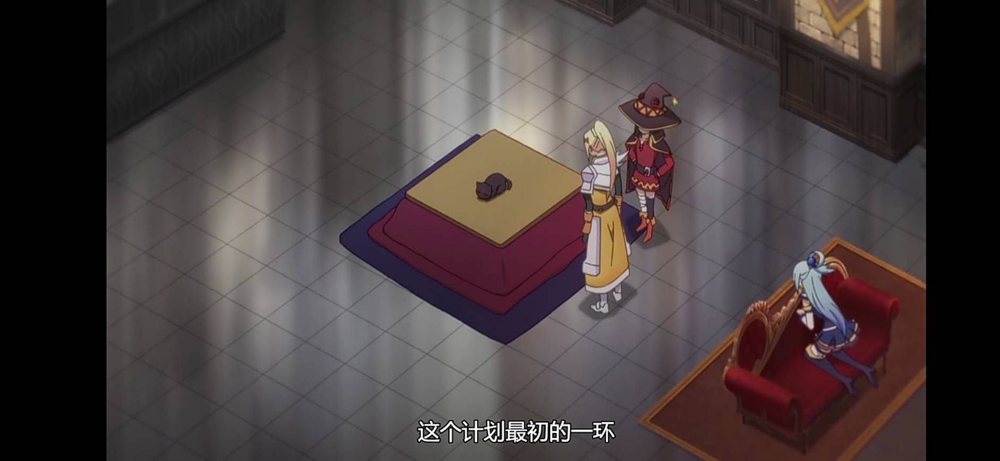
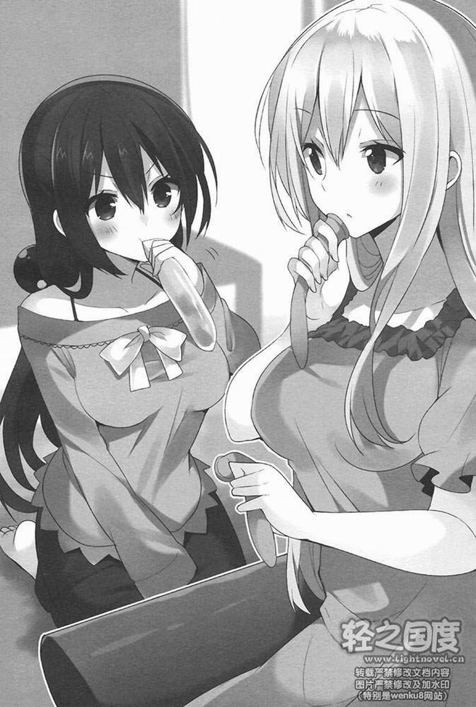

佐藤和真在異世界再製的現代道具
暖桌（こたつ）
使用注入魔力後會發熱的礦石製作。
氣球
實際上是沒辦法做得很薄又不容易破的保險套。
炸藥（ダイナマイトもどき）
用紙、遇到沖擊就會爆炸的魔法藥水、吸水性高又易燃的，某種植物腐敗後形成的特殊土壤組合在一起的簡易炸藥；爆炸威力大概只到炸裂魔法。第一次試作品被惠惠丟掉，一個縮小品被佐藤和真拿來炸傷邪神沃芭克。（類似硝化棉和硅藻炸藥的製作形式）
打火機（ライター（ジッポー、オイルライター）
簡易型態的打火機。佐藤和真從王都寶庫裡偷出來的書，被達克妮絲與克莉絲用打火機燒了。
氣泡紙
焦油樹的植物的樹汁和史萊姆的消化液混合而成，可以做出類似半乾的塑膠的材料。將空氣吹進類似塑膠的原料裏面，就可以做出類似氣泡紙的防撞墊。第一次試作品被惠惠當出氣筒捏爆了。
沙袋
縫合皮革，並填入砂土製成，放在地板上用的立式沙袋，是非常適合用來發洩壓力的用具。第一次試作品被惠惠用武士刀啾啾丸割爛了。
炒麵（焼きそば）
由於阿庫西斯教團在祭典中剛開始的生意太慘淡，所以佐藤和真製作炒麵來拉抬阿庫西斯教團生意。
回到最上面